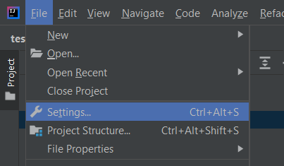
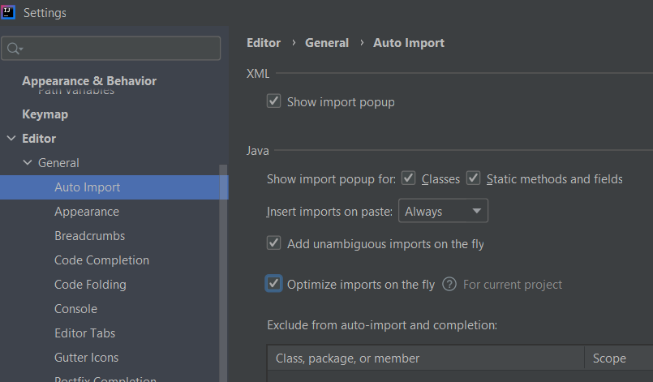
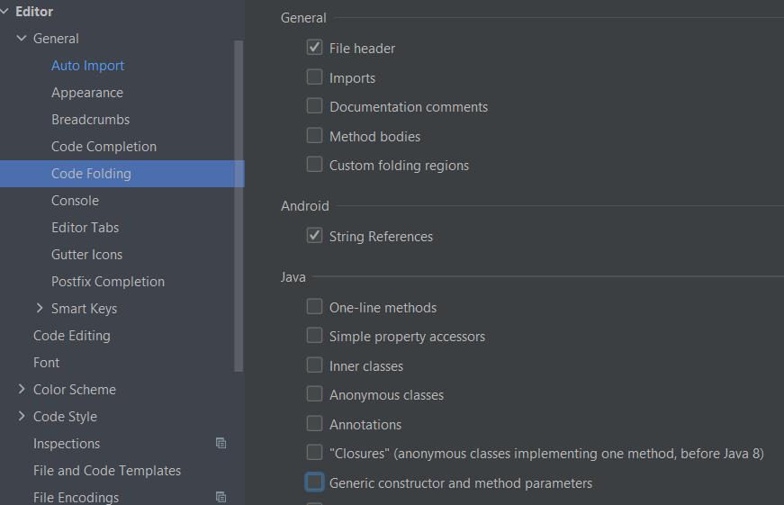

¿Qué se necesita para programar en Java?
- Instalar el JDK versión 11. Lo podemos descarga desde la página oficial de Oracle.
- Instalar un IDE (Integrated Development Environment), es un programa que te ayudar a desarrollar aplicaciones. Hay muchas opciones disponibles de IDEs.

Setup Java 11 y IntelliJ en Windows
-
Vamos a la página de Oracle y descargamos JDK 11.
-
Instalamos el JDK.
En linux usamos el siguiente comando para instalar el jdk: sudo apt-get install openjdk-11-jdk
-
Windows: Añadimos en las variables de entorno del sistema dentro de la variable Path, la ruta donde se ha instalado java en nuestra máquina (C:\Program Files\Java\jdk-11\bin)
-
Windows: Agregamos también una nueva variable llamada JAVA_HOME --> C:\Program Files\Java\jdk-11 (Ruta de nuestra máquina).
-
Verificamos que se ha instalado java, ejecutando desde línea de comandos:
java --version
-
Descargamos e instalamos IntelliJ Community
-
En File -> Settings, modificamos las siguientes opciones:   